조선기사 (2003-08-10 기출문제)
1과목: 조선공학일반
1. 길이가 55 m, 폭이 13 m, 흘수가 6 m 이고, 중앙횡단면계수(CM)가 0.8, 배수량이 3000 톤인 선박의 주형계수(CP)는? (단, 해수의 비중은 1.025 이다.)
- 0.792
- 0.853
- 0.874
- 0.924
(정답률: 알수없음)

2. 순수한 배 자체만의 무게를 나타내는 것은?
- 만재 배수량
- 경하 배수량
- 재화 중량
- 순톤수
(정답률: 알수없음)
3. 형배수량 65000 ton, 길이 210 m, 선폭 30 m, 깊이 18 m, 흘수 12 m 인 배가 있다. 방형계수(CB)로 보아 어느 배에 가장 가까운가?
- 광선 운반선
- 구축함
- 고속 컨테이너선
- 정기 여객선
(정답률: 알수없음)
4. 선박의 선수 형상을 구상선수(bulbous bow)로 만드는 주된 목적은?
- 대형선임을 나타내기 위하여
- 조파저항을 줄이기 위하여
- 추진기관의 마력을 줄이기 위하여
- 선수를 손상으로부터 보호하기 위하여
(정답률: 알수없음)
5. 선체 이중저 구조(double bottom)를 구성하는 부재가 아닌 것은?
- 특설 늑골(web frame)
- 중심선 거더(center girder)
- 내저판(inner bottom plate)
- 실체 늑판(solid floor)
(정답률: 알수없음)
6. 배수량을 일정하게 하고 선폭을 증가시키면 복원력은?
- 증가된다.
- 변동이 없다.
- 감소한다.
- 경우에 따라 다르다.
(정답률: 알수없음)
7. 선형 개발을 위한 모형시험 중에서 배의 저항, 추진성능 평가와 가장 관련이 없는 것은?
- 자항추진시험
- 유선조사시험
- 반류분포조사시험
- 응력계측시험
(정답률: 알수없음)
8. 프루드(Froude)가 분류한 선박 저항에서 잉여 저항이란?
- 조파 저항 + 조와 저항
- 마찰 저항 + 공기 저항
- 점성 저항 + 조와 저항
- 공기 저항 + 조와 저항
(정답률: 알수없음)
9. 선박의 내부에 자유표면(free surface)을 가지는 유동수(free water)가 있을 경우, 횡요 운동을 함에 따라 복원력은?
- 증가한다.
- 영향이 없다.
- 감소한다.
- 일정치 않다.
(정답률: 알수없음)
10. 파랑 중을 항해하는 선박의 종동요와 이에 따른 슬래밍의 피해를 줄일 수 있는 효과적인 방법이 아닌 것은?
- 침로나 선속 또는 두 가지를 모두 변경
- 무거운 화물을 선체중앙부에 이동
- 가급적 선수와 선미부를 날씬한 형상으로 설계
- 수평 핀(fin)을 선수 또는 선미부에 설치
(정답률: 알수없음)
11. 선박의 프로펠러에 전달되는 마력(전달마력)의 크기에 영향을 미치는 인자가 아닌 것은?
- 추력 베어링(thrust bearing)의 종류
- 주기관과 프로펠러축의 연결 방법
- 기관의 종류와 설치 위치
- 프로펠러의 형상
(정답률: 알수없음)
12. 선체 진동의 발생 원인과 가장 거리가 먼 것은?
- 프로펠러의 중심이 편심되어 있을 때
- 엔진의 실린더 수가 많을 때
- 선미부의 반류 분포가 변화할 때
- 파랑에 의해 선체가 동요할 때
(정답률: 알수없음)
13. 실선의 길이가 169 m, 선속이 10 knot이고, 상사 모형선의 길이가 4 m 일 때 수조에서 예인하는 모형선의 대응 속도는? (단, 1 knot 는 0.5144 m / s 이다.)
- 약 0.7 m / s
- 약 0.8 m / s
- 약 0.9 m / s
- 약 1.0 m / s
(정답률: 알수없음)
14. 선박 운항 시 배를 회전시키는 경우 회전모멘트가 실제적으로 최대가 되는 타각은?
- 45°
- 20°
- 15°
- 35°
(정답률: 알수없음)
15. 선박의 폭을 증가시킬 때 증대되지 않는 것은?
- 횡메타센터 반지름(BM )
- 복원성 범위
- 부심의 높이(KB)
- 메타센터 높이(GM )
(정답률: 알수없음)
16. 여객이나 화물의 운송용으로 제공되는 선박내 장소로서 직접 수익을 얻는 데 사용되는 장소의 크기를 나타내는 용적 톤수는?
- 총톤수
- 순톤수
- 배수톤수
- 경하 배수량
(정답률: 알수없음)
17. 선체구조 양식은 횡늑골식과 종늑골식 및 이 2가지를 병용한 혼합 방식이 있는 데, 혼합 방식 구조를 옳게 설명한 것은?
- 2중저와 갑판은 횡늑골식, 현측은 종늑골식이다.
- 2중저와 갑판은 종늑골식, 현측은 횡늑골식이다.
- 선수미부는 종늑골식, 중앙부는 횡늑골식이다.
- 선수미부는 횡늑골식, 중앙부는 종늑골식이다.
(정답률: 알수없음)
18. 선루(superstructure)란 상갑판 상부의 구조물로서 상부를 덮는 갑판이 선박 폭의 어디까지 다다르는 것인가?
- 양현의 선측 외판까지 연장되어 있는 것
- 선폭의 85 % 이상에 걸친 것
- 선폭의 70 % 이상에 걸친 것
- 선폭의 50 % 이상에 걸친 것
(정답률: 알수없음)
19. 세로 진수대에서 진수 전 배의 미끄러짐을 저지하기 위해 트리거(trigger)를 설치하는 데 이것만으로는 충분치 못하여 이를 보완하기 위해 추가로 설치하는 것은?
- 포핏(poppet)
- 스프링 버퍼(spring buffer)
- 도그 쇼어(dog shore)
- 헤리컬 기어(helical gear)
(정답률: 알수없음)
20. 곡선부를 3차 포물선이라고 가정하고 근사법으로 면적을 계산할 때 가장 적합한 방법은?
- 5 · 8 · -1 법칙
- 체비체브(Tchebycheff)의 법칙
- 심프슨 제 1법칙
- 심프슨 제 2법칙
(정답률: 알수없음)
2과목: 재료역학
21. 코일 스프링이 600 N 의 힘이 작용되어 0.03 m 의 변형을 일으켰다. 이 때 이 스프링에 저장된 탄성에너지는?
- 18 N·m
- 6 N·m
- 9 N·m
- 12 N·m
(정답률: 알수없음)
22. 지름이 d이고 길이가 L인 환봉이 있다. 이 환봉에 압축하중 P가 작용하여 지름이 do로 변했다면, 환봉 재료의 포아송비는 어떻게 표현되는가? (단, 환봉의 탄성계수는 E이다.)
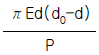
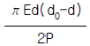
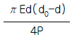
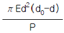
(정답률: 알수없음)
23. 길이가 L이고 직경이 d인 축에 굽힘 모멘트 M과 비틀림모멘트 T가 동시에 작용하고 있다면 최대 전단응력은?
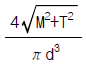
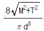
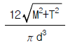
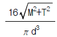
(정답률: 알수없음)
24. 입방체가 그 표면에 외부로부터 균일한 압력 P를 받고 있을 때, 체적 변화율을 표현한 식은? (단, μ는 프와송비, E는 탄성 계수이다.)
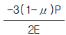
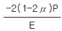
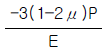
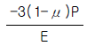
(정답률: 알수없음)
25. 다음 그림과 같이 연속보가 균일 분포하중(q)을 받고 있을 때 A점의 반력은?
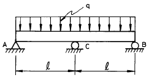
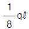
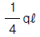
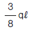
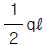
(정답률: 알수없음)
26. 그림과 같은 단면의 보에서 X축에 대한 단면계수는?
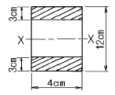
- 72 ㎝3
- 78 ㎝3
- 84 ㎝3
- 504 ㎝3
(정답률: 알수없음)
27. 보의 탄성곡선의 곡률은 어느 것인가? (단, M : 굽힘모멘트, E : 탄성계수, Ⅰ: 단면2차모멘트)
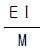
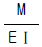
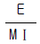
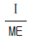
(정답률: 알수없음)
28. 길이 L인 회전축이 비틀림 모멘트 T를 받을 때 비틀림 각도(θ°)는?
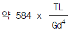
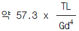
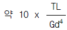
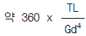
(정답률: 알수없음)
29. σx = 700 MPa, σy = -300 MPa 가 작용하는 평면응력 상태에서 최대 수직응력과 최대 전단응력은?
- σmax = 700 MPa, τmax = 300 MPa
- σmax = 600 MPa, τmax = 400 MPa
- σmax = 500 MPa, τmax = 700 MPa
- σmax = 700 MPa, τmax = 500 MPa
(정답률: 알수없음)
30. 다음 그림에 대한 설명 중 틀린 것은?
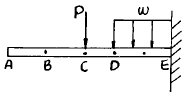
- A, B, C점의 기울기는 전부 같다.
- 구간 CD에서의 전단력은 선형으로 변화한다.
- E점의 경사각은 0이다.
- CD 구간에 작용하는 모멘트는 선형으로 변화한다.
(정답률: 알수없음)
31. 그림에서 인장력 12 kN 이 작용할 때 지름 20 mm 인 리벳 단면에 일어나는 전단 응력은 몇 MPa 인가?
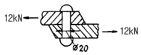
- 68.2
- 38.2
- 23.8
- 32.0
(정답률: 알수없음)
32. 양단이 핀으로 고정되어 있고, 정사각형의 단면 25mm × 25mm, 길이 1.8 m인 기둥에서의 오일러식에 의한 임계하중은 몇 kN 인가? (단, 탄성계수 E = 70 GPa 이다.)
- 1.302
- 2.604
- 3.470
- 6.941
(정답률: 알수없음)
33. 내경이 30 mm 이고 외경이 42 mm 인 중공축이 100 kW 의 동력을 전달하는데 이용된다. 전단응력이 50 MPa 을 초과하지 않도록 축의 회전진동수를 구하면 몇 Hz 인가?
- 26.6
- 29.6
- 33.4
- 37.8
(정답률: 알수없음)
34. 그림과 같이 지름 50mm 의 연강봉의 일단을 벽에 고정하고, 자유단에 600 N 의 하중을 작용시킬 때 발생하는 주응력과 최대 전단응력은 각각 몇 MPa 인가?
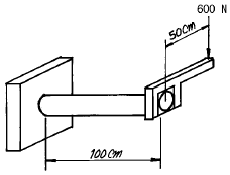
- 주응력 : 51.8, 최대전단응력 : 27.3
- 주응력 : 27.3, 최대전단응력 : 51.8
- 주응력 : 41.8, 최대전단응력 : 27.3
- 주응력 : 27.3, 최대전단응력 : 41.8
(정답률: 알수없음)
35. 그림과 같은 복합 막대가 각각 단면적 AAB=100 mm2, ABC=200 mm2을 갖는 두 부분 AB와 BC로 되어있다. 막대가 100 kN의 인장하중을 받을 때 총 신장량을 구하면? (단, 재료의 탄성계수(E)는 200 GPa이다.)
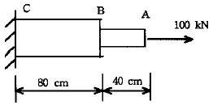
- 2 mm
- 4 mm
- 6 mm
- 8 mm
(정답률: 알수없음)
36. 재료시험에서 연강재료의 탄성계수 E = 210 GPa 을 얻었을 때 포아송 비가 0.303 이면 이 재료의 전단 탄성계수 G는 몇 GPa 인가?
- 8.⑤
- 10.5
- 35
- 80.5
(정답률: 알수없음)
37. 반지름이 r 이고 벽 두께가 t 인 얇은 벽의 구형 용기가 P 의 균일 분포 내압을 받고 있을 때 그벽속에 발생하는 막응력(membrane stress)은 얼마인가?
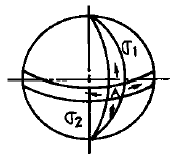
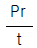
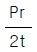
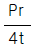
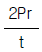
(정답률: 알수없음)
38. 중공(中空)의 강실린더 안에 구리 원통이 들어있고 높이는 500 mm로 동일하다. 강실린더의 단면적은 2000 mm2 이고, 구리 원통의 단면적은 5000 mm2이다. 구리 원통이 모든 하중을 받게하기 위해 필요한 온도상승은 최소 몇 ℃ 인가? (단, 하중은 200 kN이며, 하중을 받는 판은 변형하지 않는다. 구리 E = 120 GN/m2, α = 20 × 10-6 /℃, 철 E = 200 GN/m2, α = 12 × 10-6 /℃)
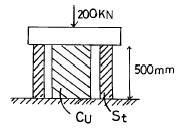
- 38
- 40
- 42
- 45
(정답률: 알수없음)
39. 지름 4 ㎝ 의 둥근봉 펀치다이스에서 두께 t = 1 ㎝ 의 강판에 펀칭구멍을 뚫을 때, 판의 전단강도가 τu = 400 MPa 라면 펀치 해머에 가해져야 하는 펀칭력은 몇 kN 인가?
- 251.5
- 502.6
- 754.5
- 1006
(정답률: 알수없음)
40. 그림과 같이 원추형 봉이 연직으로 매달려 있다. 길이 ℓ, 고정단의 직경 d, 비중량이 γ 인 경우 봉의 자중에 의한 신장량은?
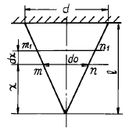
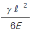
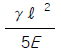
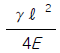
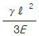
(정답률: 알수없음)
3과목: 조선유체역학
41. 수중에서의 음파의 속도는? (단, 물의 체적탄성계수는 1.96 × 109 N/m2, 물의 밀도는 1000 kg/m3 이다.)
- 1320 m / s
- 1400 m / s
- 1484 m / s
- 1535 m / s
(정답률: 알수없음)
42. 개수로 유동에서 역학적인 상사를 맞추기 위하여 가장 크게 고려해야 하는 무차원수는?
- 레이놀즈수
- 프루드수
- 오일러수
- 마하수
(정답률: 알수없음)
43. 동점성계수의 차원은?
- [L2T-1]
- [L-1T-2]
- [L T-2]
- [L T-1]
(정답률: 알수없음)
44. 급확대관에서 손실수두와 속도차와의 관계는?
- 손실수두는 속도차에 비례한다.
- 손실수두는 속도차의 제곱에 비례한다.
- 손실수두는 속도차의 제곱에 반비례한다.
- 손실수두와 속도차는 무관하다.
(정답률: 알수없음)
45. 온도의 증가에 따른 기체와 액체의 점성계수의 일반적인 변화는?
- 기체 : 증가, 액체 : 감소
- 기체 : 증가, 액체 : 증가
- 기체 : 감소, 액체 : 증가
- 기체 : 감소, 액체 : 감소
(정답률: 알수없음)
46. 와류 점성계수(eddy viscosity)에 대한 설명으로 옳은 것은?
- 유체의 물질 특성이다.
- 난류 운동의 특성이다.
- 층류 운동의 특성이다.
- 유체의 상수이다.
(정답률: 알수없음)
47. 표면파의 단위면적당 에너지 E는? (단, ρ는 밀도, g는 중력가속도, ζ는 파의 진폭이다.)
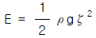
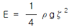
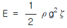
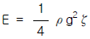
(정답률: 알수없음)
48. 단면적 A = 100 cm2, 유량 Q = 0.⑤ m3/s 인 물의 분류가 고정된 평판에 직각으로 충돌할 때 판에 작용하는 힘은?
- 294 N
- 348 N
- 250 N
- 455 N
(정답률: 알수없음)
49. 유체 흐름에 있어서 연속방정식(continuity equation)이란?
- 뉴톤의 제 2법칙을 만족시키는 방정식이다.
- 질량보존의 법칙을 만족시키는 방정식이다.
- 에너지와 일과의 관계를 나타내는 방정식이다.
- 유선상의 2점에서의 단위체적당의 모멘텀에 관한 방정식이다.
(정답률: 알수없음)
50. 경계층에 관한 설명 중 틀린 것은?
- 평판 위 흐름에서 경계층 내의 천이영역의 레이놀드수는 보통 5 × 105 이다.
- 경계층 내에서는 속도구배가 크기 때문에 마찰응력이 감소한다.
- 경계층 내에도 층류와 난류의 영역이 생긴다.
- 경계층 밖의 흐름은 포텐셜 흐름이다.
(정답률: 알수없음)
51. 어떤 관을 통하여 유속 2 m/s 로 유량 0.25 m3/s 이 흐른다면 이 관의 내경은?
- 35.2 cm
- 39.9 cm
- 51.5 cm
- 66.4 cm
(정답률: 알수없음)
52. 점성계수가 0.9 poise 이고, 밀도가 930 kg/m3인 유체의 동점성계수는 몇 stokes 인가? (단, 1 poise = 1 g/cm·s, 1 stokes = 1 cm2/s 이다.)
- 9.66
- 0.968
- 9.66 × 10-2
- 9.66 × 10-3
(정답률: 알수없음)
53. 평판상의 흐름에서 난류 경계층의 두께는? (단, x 는 평판의 선단에서 떨어진 거리)
- x1/3 에 비례하여 변한다.
- x1/2 에 비례하여 변한다.
- x1/5 에 비례하여 변한다.
- x4/5 에 비례하여 변한다.
(정답률: 알수없음)
54. 아래 그림과 같이 부유체가 정수면에서 상하운동을 할 때 발생하는 파도의 역학적 의미는?
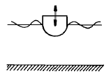
- 부가질량을 의미한다.
- 감쇄력을 의미한다.
- 기진력을 의미한다.
- 역학적 의미가 없다.
(정답률: 알수없음)
55. 주기가 7초인 진행파에서 파의 전진속도는? (단, 중력 가속도는 9.8 m/s2 이며, 수심은 충분히 깊다.)
- 약 6.4 m / s
- 약 8.2 m / s
- 약 10.9 m / s
- 약 13.6 m / s
(정답률: 알수없음)
56. 원형 관속을 흐르는 유체의 전단응력에 대한 설명으로 옳은 것은?
- 원형 단면의 모든 곳에서 일정하다.
- 벽면에서 0 이고 관 중심까지 직선적으로 증가한다.
- 단면에서 포물선 형태로 변화한다.
- 관 중심에서 0 이고 벽면까지 직선적으로 증가한다.
(정답률: 알수없음)
57. 부체가 수면에 떠 있을 경우 안정상태를 가장 바르게 설명한 것은?
- 무게중심이 부심의 위치보다 위에 있어야 한다.
- 무게중심과 부심의 위치가 같아야 한다.
- 무게중심과 메타센터 위치가 같아야 한다.
- 무게중심이 메타센터 위치보다 아래에 있어야 한다.
(정답률: 알수없음)
58. 유체의 한 입자가 일정한 기간내에 유동해 가는 경로는?
- 정상류(steady flow)
- 유맥선(streak line)
- 유적선(path line)
- 유관(stream tube)
(정답률: 알수없음)
59. 지름이 10 cm 인 공이 속도 3 m/s 로 날아가고 있다. 공기의 밀도가 1.23 kg/m3, 항력계수가 0.4 인 경우 항력은?
- 0.0174 N
- 0.174 N
- 1.74 N
- 17.4 N
(정답률: 알수없음)
60. 그림과 같이 0.6 m×3.5 m 의 수문 평판 A B 를 수면과 30° 각도로 설치해 놓았다. A 점에서 힌지(hinge)로 연결되어 있으면 이 문을 B 점에서 열기위한 힘 P (수문에 수직)는?
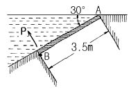
- 14.9 kN
- 13.3 kN
- 12.0 kN
- 11.4 kN
(정답률: 알수없음)
4과목: 선체의장 및 선체구조역학
61. 동일 배수량의 선박이라면 굽힘모멘트가 가장 크게 작용하는 선박은?
- 폭이 좁고 길이가 긴 선박
- 뚱뚱하고 길이가 짧은 선박
- 선수, 선미가 날씬하고 중앙부가 뚱뚱한 선박
- 폭이 넓고 길이가 짧은 선박
(정답률: 알수없음)
62. 다음 그림과 같은 부재의 관성모멘트(면적의 2차모멘트) 값은? (단, h1 = 2m, h2 = 3m 이다.)
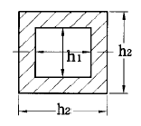
- 5.4 m4
- 4.8 m4
- 2.6 m4
- 1.3 m4
(정답률: 알수없음)
63. 배의 중앙부에서 굽힘모멘트가 80000 ton·m, 갑판부의 단면계수가 2000 m3, 중립축에서 갑판까지의 거리가 4 m 라면, 갑판에 작용하는 응력은?
- 10 ton/m2
- 40 ton/m2
- 20 ton/m2
- 160 ton/m2
(정답률: 알수없음)
64. 다음 중 선내 통신장치는?
- 무선전신
- 전성관
- 신호등
- 벨
(정답률: 알수없음)
65. 단면의 가상 중립축에 관한 설명중 잘못된 것은?
- 계산의 편의상 적당한 위치에 잡는다.
- 복잡한 단면의 2차 모멘트 계산에 활용된다.
- 가상중립축에 관한 2차 모멘트는 항상 실제 중립축에 관한 그것보다 크다.
- 평행축 정리를 이용하여 실제 중립축 위치를 찾는다.
(정답률: 알수없음)
66. 기관실과 같이 대량의 환기가 필요한 곳에 사용하는 통풍통은?
- 버섯형 통풍통(mushroom ventilater)
- 고깔형 통풍통(cowl head ventilater)
- 구스넥 통풍통(gooseneck ventilater)
- 루프형 통풍통(loop type ventilater)
(정답률: 알수없음)
67. 페어 리더(fair leader)의 사용 목적은?
- 로프를 고정
- 선체 및 로프를 보호하며 조작의 원활성을 부여
- 와이어 로프를 감아 격납
- 로프를 연결
(정답률: 알수없음)
68. 선박의 구조부재 치수를 결정할 때 고려되어져야 할 항목은?
- 해수온도
- 해류
- 부식(corrosion)
- 운항일수
(정답률: 알수없음)
69. 선체의 횡강도를 증가시키는데 기여하는 부재는?
- 특설 늑골(web frame)
- 중심선 거더(center girder)
- 종격벽(longitudinal bulkhead)
- 용골(keel)
(정답률: 알수없음)
70. 스토크리스 앵커(stockless anchor)의 장점이 아닌 것은?
- 취급과 격납이 간단하다.
- 앵커 베드(bed)의 설비가 필요없다.
- 파지력이 크다.
- 앵커 암(arm)을 좌우 어느쪽으로도 회전할 수 있다.
(정답률: 알수없음)
71. 선박 구획 중 송풍기로 강제 배기하여야 하는 곳은?
- 조리실
- 일반화물창
- 선실
- 기계실
(정답률: 알수없음)
72. 동력식 조타 장치에서 타가 소요의 각도로 돌아갔을 때 타를 그 위치에서 고정시키는 장치는?
- 조종장치(controlling gear)
- 추종장치(follow-up gear)
- 전동장치(transmission gear)
- 조타 로드(steering chain)
(정답률: 알수없음)
73. 의장수에 의하여 결정되는 것이 아닌 것은?
- 앵커의 개수
- 앵커의 길이
- 앵커의 중량
- 앵커 체인의 치수
(정답률: 알수없음)
74. 선수선저부가 파도의 충격을 받을 때 나타나는 현상이 아닌 것은?
- 선체 구조의 변형
- 선체 구조 부재의 파손
- 호깅 모멘트의 급격한 증가
- 진동 및 소음의 발생
(정답률: 알수없음)
75. 구명정에 표시되지 않는 것은?
- 주요치수
- 만재중량
- 전진속력
- 제조년월일
(정답률: 알수없음)
76. 선체구조의 응력집중에 관한 설명으로 잘못된 것은?
- 스롯(slot)등과 같이 가늘고 긴 작은 개구에서 크게 발생한다.
- 균열을 방지하기 위해 맨홀 등에서는 그 주위에 면적보상을 위한 보강재를 설치한다.
- 개구부 모서리, 선루의 끝부분 등에는 큰 응력집중이 일어나기 쉽다.
- 용접부나 구조적 불연속 지점에서 발생하기 쉽다.
(정답률: 알수없음)
77. 화물창을 횡 방향으로 분리하여 더블 해치(double hatch)로 하면 싱글 해치와 비교하여 어떤 점이 유리한가?
- 보다 많은 화물을 실을 수 있다.
- 보다 무거운 화물을 실을 수 있다.
- 선체 강도상 유리하다.
- 하역속도가 증가한다.
(정답률: 알수없음)
78. 선체의 선회 모멘트가 이론적으로 최대값이 되는 때의 키의 각도는?
- 15°
- 20°
- 30°
- 45°
(정답률: 알수없음)
79. 선체에 작용하는 하중 중 정적(static)하중에 속하는 것은?
- 슬로싱(sloshing) 하중
- 입거(drydocking) 하중
- 슬래밍(slamming) 하중
- 강제진동 하중
(정답률: 알수없음)
80. 다음 선박 중 비틂 모멘트에 가장 취약한 배는?
- 살물선
- 유조선
- 컨테이너선
- 가스 운반선
(정답률: 알수없음)
5과목: 선박건조공학 및 선박동력장
81. 다음 중 내연기관이 아닌 것은?
- 가솔린 기관
- 증기 터빈
- 디젤 기관
- 가스 터빈
(정답률: 알수없음)
82. 선체 용접작업시 용접변형을 방지하는 방법으로 부적합한 것은?
- 수축은 될 수 있는 대로 자유단으로 보낸다.
- 중앙에 대하여 대칭적으로 용접한다.
- 용접 층수를 되도록 작게 한다.
- 용접 속도를 되도록 느리게 한다.
(정답률: 알수없음)
83. 선박 기관 및 추진축계의 축심 투시와 가장 관련이 없는 것은?
- 선미관
- 타두재
- 주기대
- 축계 전길이
(정답률: 알수없음)
84. 현대의 대형선 건조에 가장 적합한 선대 형식은?
- 해면측을 개방한 경사 선대
- 세미 드라이 독(semi-dry dock)
- 건조 독(dry dock)
- 싱크로 리프트(syncro lift)
(정답률: 알수없음)
85. 어떤 디젤기관에서 행정이 0.9 m 인 피스톤이 600 rpm 으로 회전하고 있다. 이 기관의 피스톤 속도는?
- 9 m/s
- 18 m/s
- 36 m/s
- 54 m/s
(정답률: 알수없음)
86. 다음 중 프로펠러에 의해 유기되는 선미 진동현상과 가장 관련이 적은 것은?
- 선미 형상
- 프로펠러의 레이크(rake)
- 프로펠러 날개의 명음현상(singing)
- 프로펠러 날개 표면 위의 공동현상(cavitation)
(정답률: 알수없음)
87. 반류계수를 ω, 추력감소계수를 t 라 할 때 선각효율을 옳게 나타낸 식은?
- (1 - t) / ω
- (1 -ω) / (1 - t)
- ω / (1 – t)
- (1 - t) / (1 - ω)
(정답률: 알수없음)
88. 조선 공정의 흐름순서로 옳은 것은?
- 현도공정 - 가공공정 - 조립공정 - 선대공정 - 진수작업
- 현도공정 - 선대공정 - 가공공정 - 조립공정 - 진수작업
- 현도공정 - 조립공정 - 선대공정 - 가공공정 - 진수작업
- 현도공정 - 가공공정 - 선대공정 - 조립공정 - 진수작업
(정답률: 알수없음)
89. 기관의 크랭크실 내부에 과압을 완화시키기 위해 부착하는 것은?
- vent
- bypass valve
- breather
- relief valve
(정답률: 알수없음)
90. 선체와 추진기의 종합적인 효율을 알기 위한 수조 시험의 종류는?
- 저항시험
- 추진기 단독시험
- 자항시험
- 추진기 선후시험
(정답률: 알수없음)
91. 외판의 랜딩(landing) 작업시 시작 기점은?
- 선수부 외판
- 중앙부 외판
- 선미부 외판
- 선저 외판
(정답률: 알수없음)
92. 선박의 프로펠러 추진기가 부식(corrosion)되거나 침식(erosion)되는 경우가 아닌 것은?
- 산 또는 알칼리에 의하여 화학적으로 손상을 받는 경우
- 주위 금속과 이온화 경향의 차이로 전위차가 발생하는 경우
- 추진기에 공동현상(cavitation)이 발생하는 경우
- 추진기의 피치가 작고 저속으로 회전하는 경우
(정답률: 알수없음)
93. 4행정 기관과 비교하여 2행정 기관의 장점인 것은?
- 열효율이 높다.
- 용적효율이 높다.
- 토크 변화가 적고 운전이 원활하다.
- 운전범위가 넓고 운전의 유연성도 크다.
(정답률: 알수없음)
94. 강재 가공작업의 종류 중 용접의 발달로 그 필요성이 없어진 작업은?
- 플랜징(flanging)
- 코킹(caulking)
- 절단
- 마킹(marking)
(정답률: 알수없음)
95. 서브머지드 아크 용접(submerged arc welding)의 장점이 아닌 것은?
- 고품질의 용착 금속을 얻을 수 있다.
- 용착 속도가 빨라 고능률적이다.
- 전자세 용접이 가능하다.
- 가스나 연기가 발생하지 않으므로 작업 환경이 좋다.
(정답률: 알수없음)
96. 프로펠러 추진기 슬립의 증가 원인이 아닌 것은?
- 배의 저항 증가
- 추진기의 회전수 증가
- 추진기의 피치 증가
- 추진기의 날개면적 증가
(정답률: 알수없음)
97. 고장력강으로서 탈산 정도가 가장 높은 강은?
- 림드강
- 세미 림드강
- 킬드강
- 세미 킬드강
(정답률: 알수없음)
98. 다음 용접 개선(開先) 형상 중 두꺼운 판 이음시에 적용되는 형상은?
- I형
- V형
- X형
- J형
(정답률: 알수없음)
99. 선박기관의 디레이팅(derating)의 설명으로 옳은 것은?
- 기관의 노후화로 기관 출력이 저하되는 현상이다.
- 선박의 운항시 자동으로 기관 하중상태가 줄어드는 현상이다.
- 기관-프로펠러의 맞춤(matching)점을 낮게 잡는 설계방식이다.
- 본래 기관의 출력보다 낮춘 값에서 정격출력을 설정하는 것이다.
(정답률: 알수없음)
100. 선체 블록 중 곡면 블록에 속하는 것은?
- 선체 평행부의 갑판 블록
- 선수 및 선미의 측외판 블록
- 선체 평행부의 선저 블록
- 격벽블록
(정답률: 알수없음)
먼저, 배수량과 해수의 비중을 이용하여 선박의 중심선에서의 배의 체적을 구한다.
체적 = 배수량 / 해수의 비중 = 3000 / 1.025 = 2926.83 m3
다음으로, 선박의 수심을 구한다.
수심 = 체적 / (길이 x 폭) = 2926.83 / (55 x 13) = 3.98 m
흘수와 수심을 이용하여 Froude 수를 구한다.
Fr = 흘수 / √(중력가속도 x 수심) = 6 / √(9.81 x 3.98) = 0.654
Froude 수에 해당하는 주형계수(CP)를 보기에서 찾으면 0.853 이다. 따라서 정답은 0.853 이다.
이유는 Froude 수와 주형계수 사이에는 일정한 관계가 있기 때문이다. Froude 수가 일정 범위 내에 있을 때, 해당하는 주형계수는 일정한 값을 가지게 된다. 이 관계식을 이용하여 Froude 수를 구하고, 이에 해당하는 주형계수를 찾으면 된다.